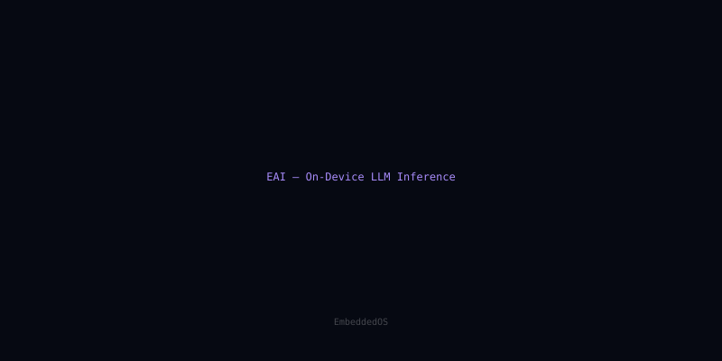
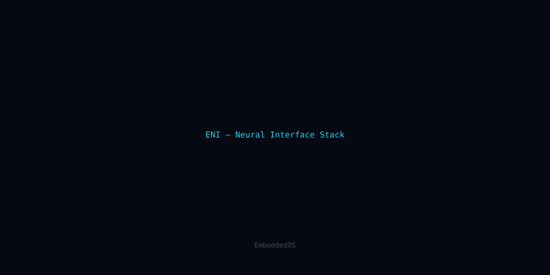

Three big bets
The EoS RTOS roadmap for 2026 is shorter and more ambitious than past years. Three engineering bets, each large enough to slip on its own:
1. Tickless idle
The current 100 Hz tick is fine for most workloads but leaks measurable power on always-on edge devices. The new --tickless kernel mode eliminates the tick entirely; wakeups are driven by timer-queue events. Target wake latency: under 800 ns on Cortex-M7. The hard part is preserving deterministic priority inversion behavior for the existing real-time guarantees.
2. RT-IPC across security domains
Today, sharing memory between a normal-world task and a secure-world task means a copy. RT-IPC adds a primitive for zero-copy region sharing, with hardware MPU programming and a handshake protocol for ownership transfer. We expect this to land first as an optional EoS-S feature, then graduate to the base RTOS.
3. Formal verification of the context switch
The kernel's context-switch path is 240 lines of assembly per architecture, and it's been hand-audited dozens of times. We're partnering with two academic groups to produce a machine-checkable proof that the switch preserves register state, satisfies the AAPCS calling convention, and never exposes prior-task secrets. Target: Cortex-M and RV32 complete by Q4.
What's not on the list
SMP scheduling on more than 4 cores. We continue to believe the right answer for high-core-count systems is a different kernel; EoS targets up-to-quad-core deterministic workloads.
Read next

eos-platform 1.0 lands: one toolchain, every EoS profile
After eighteen months of incremental releases, the eos-platform meta-distribution reaches 1.0 with stable APIs, a unified package manifest, and reproducible builds across all 14 EoS components.

EAI 0.9 ships INT4 LLM runtime — 11 tok/s on a Cortex-M85
EAI's new quantized inference path squeezes a 1.3B-parameter model into 312 MB of flash and runs at interactive speed on a 480 MHz microcontroller. We dig into the kernel scheduler that made it possible.

ENI's 1,024-channel pipeline: deterministic spike sorting in 800 µs
How the Embedded Neural Interface stack moves a thousand-electrode array through filtering, sorting, and decoding inside a single RTOS frame — and why the hardest part wasn't the math.